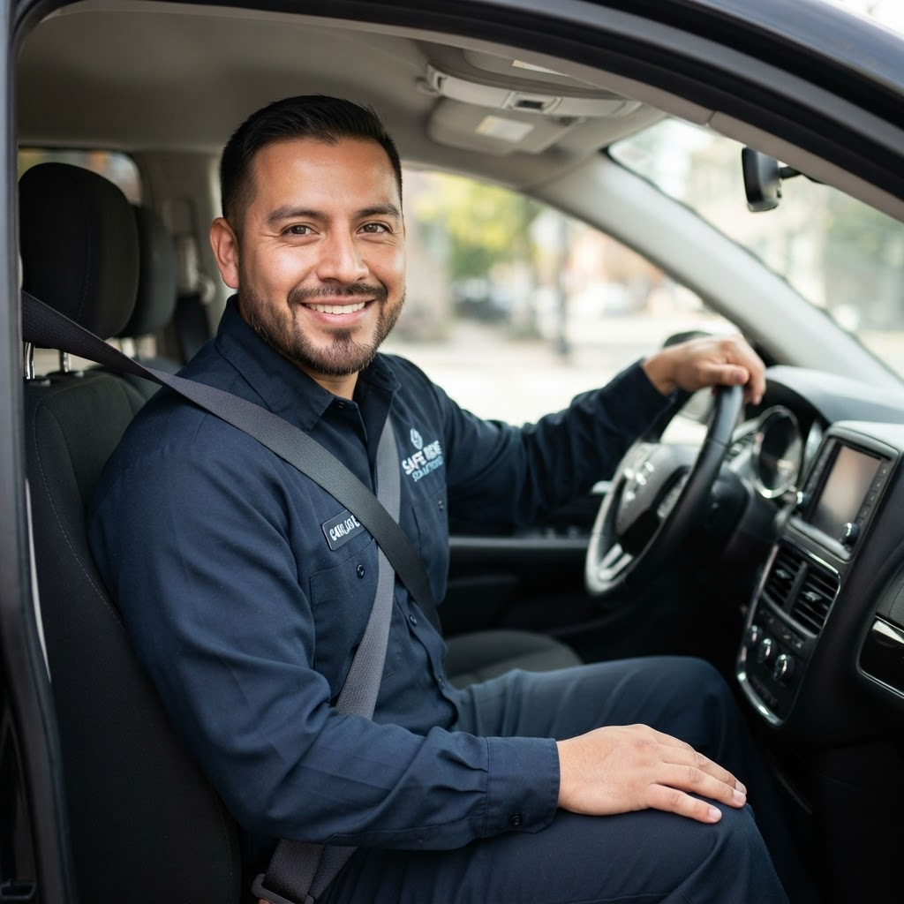

Monitoreo en Vivo
Visualiza el recorrido exacto del vehículo de transporte escolar de tus hijos sobre el mapa interactivo en tiempo real.
Conecta a padres y conductores en tiempo real. Monitorea paradas, recibe alertas de incidencias y mantén comunicación directa durante todo el traslado escolar.
Reducimos la incertidumbre diaria de los trayectos escolares con herramientas de control inmediatas.
Visualiza el recorrido exacto del vehículo de transporte escolar de tus hijos sobre el mapa interactivo en tiempo real.
Recibe notificaciones automáticas cuando el transporte esté cerca de casa, al llegar al colegio o ante incidencias.
Chat integrado entre conductores y padres sin compartir números privados. Centraliza todos los reportes.
Comenzar a monitorear los trayectos escolares toma solo unos minutos.
El conductor marca el recojo del estudiante y la familia recibe la confirmación al instante.
Un timeline muestra el avance del recorrido y avisa si hay retrasos por tráfico o desvíos.
Cualquier eventualidad se registra una sola vez y llega a quien necesita saberlo.
Al llegar al colegio o al hogar, la entrega queda registrada y notificada.
Explora las principales herramientas de Rumbo para mantener informadas a las familias y facilitar la gestión de cada recorrido escolar.
Elige la opción que mejor se adapte a la forma en que utilizas Rumbo.
Una opción sencilla para comenzar a utilizar Rumbo y conocer las herramientas principales de la plataforma.
Pensado para conductores que buscan una experiencia más completa para organizar y consultar la información de sus recorridos.
Una alternativa ampliada para conductores que desean aprovechar al máximo las herramientas disponibles en Rumbo.
Rumbo es un puente digital que une a quienes buscan seguridad con quienes la brindan con esmero.
“Con Rumbo se acabaron las llamadas de desesperación en el tráfico. Sé exactamente cuándo la movilidad pasará por Mateo. Es invaluable.”
“Los padres aprecian la transparencia. La app me permite registrar eventos en un tap y continuar manejando seguro.”

“Implementamos Rumbo en toda nuestra flota de movilidad. Redujimos un 40% las consultas de incidencias en recepción.”
¿Tienes dudas sobre la seguridad o el funcionamiento técnico? Aquí las aclaramos.
Rumbo utiliza cifrado SSL de extremo a extremo. Los datos de ubicación son privados y solo accesibles tanto para el padre registrado como para el conductor autorizado.
El sistema alerta de inmediato al despachador escolar y al padre cuando la señal de GPS se interrumpe por más de 3 minutos, activando un protocolo de reporte de emergencia.
Absolutamente no. La aplicación móvil del conductor está diseñada para ser de bajo contacto, con comandos de voz y botones gigantes de un toque que solo se presionan en detenciones autorizadas.
Descarga la app en tu teléfono inteligente o contáctanos para integrar a
tu colegio.
Disponible para
iOS y Android de forma gratuita.